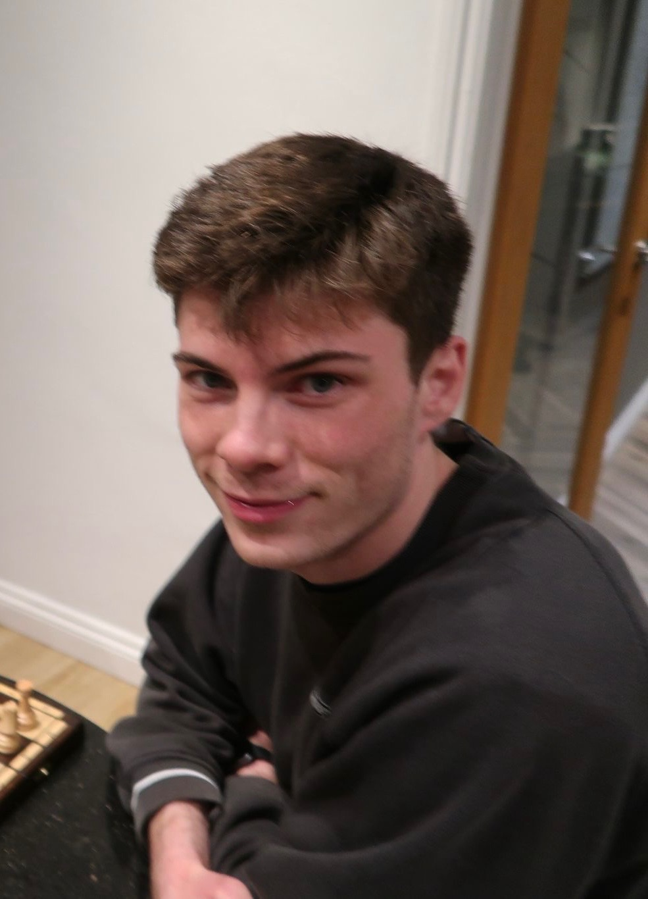

Machine Learning Engineer · AppliedCL
Mar 2026 – presentProtein modelling, biological representations, and model evaluation.

Machine learning engineer.
I’m Reece, an ml engineer working with Python build models and solve problems; I enjoy research and compbio, reading papers and writing papers. My interests span neurodegenerative disease and computational biology, where I also contribute through non-profit work. I try my best to contribute to os projects when I find the time.
Protein modelling, biological representations, and model evaluation.
Causal learning and generalisation in clinical voice data.
Entrepreneur First’s summer 2025 Founder in Residence cohort, startup work, and prototypes at a16z HACK UK, IC HACK, and Encode.
An online marketplace connecting people with experts. Managed operations and finances for a team of seven.
71% overall · 75% dissertation
Dissertation supervisor: Dr. Max A Little
68% overall · Strategy, enterprise, and innovation.
Dissertation supervisor: Dr. Daniel Cho